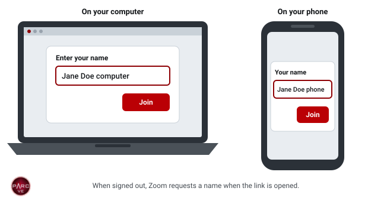
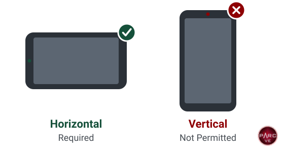
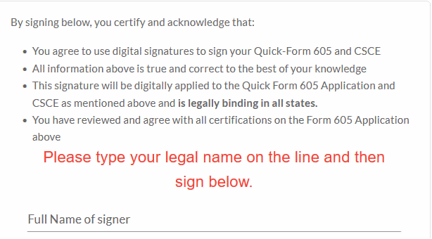

Online Exam Instructions
Choose an Instruction Format
Candidates new to online examinations should first read the overview.
Pre-Exam Checklist The same requirements as a printable checklist.
Before You Book an Online Exam
Online examinations are supervised live over Zoom by a team of at least three Volunteer Examiners, one candidate at a time. PARC conducts these examinations with the permission of the ARRL VEC and the FCC, under strict rules that protect the integrity of every result.
Requirements
- Two devices with cameras, both connected to Zoom for the entire session. The examination is taken on a Windows or Mac computer. A phone or tablet beside the candidate shows the candidate, both hands and the screen.
- A private, quiet room with a door that closes and no other persons present.
- Consent to a room scan and a recording. The entire room is shown on camera, and the session is recorded. Remove or cover any items that should not be recorded.
- An FCC Registration Number (FRN) before booking. The FRN should be registered with an email address other than Gmail, because FCC fee notices are frequently not delivered to Gmail accounts.
- A physical photo ID from the list of acceptable identification.
Candidates who cannot meet these requirements, or who do not consent to the room scan and recording, should schedule an in-person session.
Acceptable Identification In-Person Sessions
Candidates must be fully prepared. A candidate who is not ready when admitted is returned to the waiting room, and the next candidate is admitted. A second occurrence requires booking a new examination.
Where and How to Study
Book an examination only after consistently scoring 85% or higher on at least 15 practice tests. Each session requires the time of several volunteers and a time slot that could otherwise be assigned to another candidate.
Practice Tests and Classes
How to Book, Pay and Register
All candidates book the same way. Some situations require arrangements before booking, so review the situations listed at the end of this page first.
1. Book and Pay
- Select a time on the schedule. The $15 examination fee is paid by card when booking. There is no separate payment step.
- Use the same email address to book, pay and register. A different address is the most common reason a booking cannot be matched to its payment.
- The fee is forwarded to the ARRL VEC and is non-refundable, including for missed examinations and equipment failures.
- Candidates who do not pass may book another session, including on the same day. Each attempt requires a separate $15 fee.
2. Register
- A registration link is emailed from vetesting@yahoo.com within 48 hours of booking. Registrations are processed once a day; candidates who book for the following day should monitor their email, including spam and junk folders.
- Complete the registration as soon as it arrives. The registration is the license application (FCC Form 605), and it is required for admission to the examination. Enter your name exactly as it appears on your photo identification.
- Upgrade candidates must email a copy of their current license, or of any CSCE from a previous session, as a PDF to vetesting@yahoo.com before registering.
- Basic qualification question. The application includes the FCC basic qualification (felony) question. A candidate who answers yes must send the required documentation directly to the FCC within 14 days of the filing date, referencing the application file number, as described by the ARRL. Otherwise, the FCC dismisses the application. This documentation must not be sent to PARC or the VEC.
ARRL: FCC Qualification Question
Public Record of the License Address
The name and mailing address on a license become public when the license is issued. Telephone numbers, email addresses and Social Security numbers are not published. To list a PO Box on the application, email your physical address to vetesting@yahoo.com before registering, with the subject line “Physical Address for Non-Public Record Only” and the reason for the request.
Email a PO Box Request ARRL: Licensee Privacy
Your situation
One Exam
One examination element in one session. This is the standard booking, and no advance arrangement is required.
Book a single time slot on the schedule. A candidate who passes and wishes to attempt the next element on the same day may ask the examiner during the session. This is possible only when the adjacent time slots are available.
Two or Three Exams in One Session
Two or three examination elements taken consecutively in one session, such as Technician and General on the same day.
This must be arranged before booking. Each Zoom session must serve as many candidates as possible, and additional elements occupy time slots reserved for other candidates. Approval depends on the candidate’s practice test scores, the time required for each element, and the availability of consecutive time slots on the requested day.
More Than One Candidate in the Same Building
Two or more candidates testing from the same residence or building.
Each candidate requires a separate booking, computer, second device and room. Candidates may not share a screen, desk or room. The room scan and camera requirements apply to each candidate individually, exactly as they would to a candidate testing alone.
Candidates may book simultaneous time slots, provided that each candidate meets these requirements.
Group Sessions
A school class or other large group testing at the same time may arrange its session by email instead of through the booking form. Individual candidates book on the schedule.
Email to Arrange a Group Session
Accommodations
An accommodation is a change to the standard examination procedure for a candidate with a disability. It must be requested and approved before booking.
Under FCC rules, the examiners must make such a change when a physical disability requires it (47 CFR 97.509(k)). They may first ask for a statement from a physician that describes the disability.
Available Accommodations
- Questions read to the candidate: online, an examiner may read each question aloud, up to two times, and additional time is allowed. In person, an examiner may read the entire examination to the candidate, and up to one hour is allowed.
- Hearing: for a deaf or hard-of-hearing candidate, the team discusses the candidate’s needs in advance and sets up the session to meet them. This can include reading the questions aloud, typed instructions and captions.
- Vision: screen magnification may be permitted, on a case-by-case basis.
- Physical disability: adaptive keyboards and switches may be used with a desktop computer. A helper may hold the phone for the room scan, and must then leave the room before the examination begins.
- Calculations: a candidate who cannot use the calculator built into ExamTools may ask an examiner to perform the calculation. The candidate states the calculation, such as the sine of 60 degrees, and the examiner enters it and reads back the result.
Other changes may need a different type of session or another examiner, so they cannot be arranged on the day of the examination.
Contents of the Request
- The assistance required.
- A description of the disability.
- Any adaptive equipment to be used, such as a keyboard or switch.
- The examination element or elements, such as Technician or General.
- Preferred dates, and whether an online or an in-person session is preferred.
HandiHam offers further support to people with disabilities who hold, or are working toward, an amateur radio license.
Accessible Testing and HandiHam
Acceptable Identification
Identification is presented to the camera, front and back, until every examiner has verified it. The physical document is required. Mobile or digital IDs, photographs and copies are not accepted.
Adult Candidates
One unexpired photo ID from the following list:
- State-issued driver’s license
- State-issued photo ID card
- US passport. Passports issued by other countries are not accepted.
A driver’s license or state ID must show the candidate’s current residential address. Business addresses, PO Boxes and mail services are not accepted. United States citizenship is not required, but one of these documents is.
Candidates Under 18
With a photo ID from the list above, no further identification is required.
Without a photo ID, a parent or legal guardian must appear on camera, present their own photo ID from the list above, and verbally identify themselves and the candidate. The candidate must then present one of the following:
- Non-photo state ID card (issued by some states)
- Birth certificate bearing the official seal
- Social Security card
- Minor’s work permit
- School ID card
- School or public library card
Report cards are not accepted.
Candidates Age 13 and Under
- Age 13 and under: before the examination, a parent must complete the COPPA consent form and email it to the address on the form.
- Under age 13: an adult must remain in the room during the examination.
An examination cannot proceed without acceptable identification, and the fee is not refunded. Candidates who are uncertain whether their identification qualifies should email vetesting@yahoo.com before booking.
Preparing Your Room

- Paper and notes
- A second monitor
- A calculator
- A phone lying on the desk
- Headphones or earbuds
- A watch
- Radios or QSL cards

Room Selection
- Use a room with a door that closes, where no one will enter during the examination. A bathroom or a large closet is often suitable because it is small, quiet and easy to clear.
- Vehicles, outdoor locations and any location with uncontrollable noise are not permitted.
- Sit at a desk, table or counter, on a stable chair that does not rock or recline. Beds and couches are not permitted.
Clearing the Room and Desk
- Remove anything that could assist with the examination, or appear to do so:
- notes, books, papers and sticky notes
- calculators, additional screens and other electronic devices
- amateur radio items, such as radios, posters and QSL cards
- Clear the desk and the surrounding floor of all items not required for the examination, including food and drinks, headphones, waste baskets, vapes, ashtrays and tobacco products.
- Open closet doors and shower curtains for the room scan, and close them before the examination begins.
Other Persons and Animals
- No other persons or animals may be present in the room. The only exceptions are a service dog and the adult required to remain with a candidate under age 13, as described under Acceptable Identification.
- A candidate who cannot hold the phone for the room scan may have a helper do so. The helper must then leave the room before the examination begins.
- Instruct household members not to enter the room and to avoid noise, including from pets, during the examination. If anyone enters the room, the examination must be stopped.
Preparing Your Computer
Computer Requirements
- A Windows 10 (or later) or Mac laptop or desktop computer. Chromebooks, iPads and other tablets, and Linux computers are not permitted.
- A camera facing the candidate directly and a working microphone. On a laptop, use the built-in camera.
- Reliable internet service. VPNs and phone hotspots are not permitted.
- One screen. Turn off, turn away or cover any additional monitors, and disable virtual screens. A laptop may not be connected to a docking station.
- Keyboard and mouse. A laptop must use only its built-in keyboard and trackpad; external mice and keyboards are not permitted. A desktop computer requires a wired keyboard and mouse. Adaptive keyboards and switches may be used with a desktop computer when requested as an accommodation.
- The computer must be fully charged or connected to power.
Zoom Setup
- Install the Zoom application on the computer and the phone. Zoom in a web browser is not supported.
- Test both devices before the day of the examination, and become familiar with the use of Zoom.
- Virtual backgrounds and background blur are not permitted. The examiners must be able to see the entire room.
Naming the Devices

- Sign out of Zoom on both devices. When signed in, Zoom uses the account name and does not request a name.
- Open the Zoom link from the email on each device.
- When Zoom requests a name, enter your first and last name followed by computer or phone. Devices cannot be renamed in the waiting room.
- On the computer, turn on video and join audio with the microphone unmuted. On the phone, turn on video but do not join audio, as described under Preparing Your Second Device.
Before Joining
- Close all applications except Zoom, including browsers, email, messaging, Teams, Discord, Steam, remote-desktop tools and VPNs.
- Turn on Do Not Disturb and turn off Bluetooth. A notification that appears during the examination may be taken as outside assistance, and the examiners are required to act on it.
- Remove watches, earbuds, headphones, smart glasses and hats, and place them out of reach.
 Do Not Disturb, called Focus on newer Macs and on iPhones, is indicated by this
moon symbol.
Do Not Disturb, called Focus on newer Macs and on iPhones, is indicated by this
moon symbol. On a Mac, Do Not Disturb and Bluetooth are located in Control Center, shown by this
icon at the top right of the menu bar.
On a Mac, Do Not Disturb and Bluetooth are located in Control Center, shown by this
icon at the top right of the menu bar.
Examination Window

- The examination runs in a browser window, which the Exam Manager instructs you to open after your screen is shared. Before the day of the examination, practice sizing a browser window as shown, and then close it.
- Answer using the A, B, C and D keys; the next question appears automatically. Do not scroll or touch the trackpad during the examination.
- Use only the calculator built into ExamTools. A separate calculator application, or a physical calculator in the room, is grounds for ending the examination.
Preparing Your Second Device
The phone or tablet serves as the examiners’ second camera. It is used to scan the room and then remains positioned beside the candidate for the entire examination.

Placement
- Place the device on a stand directly to your left or right, near the front edge of the desk, at a distance that shows your face, both hands, the keyboard and the screen. The device may not lie flat.
- Position the device horizontally and use the rear camera. Practice switching from the front camera before the day of the examination.
- Where possible, keep the door within view of one of the cameras.


Device Requirements
- A phone or tablet with a working camera, an internet connection and the Zoom application installed.
- Fully charged or connected to power for the entire session.
- A phone stand or clip mount.
Audio Settings
- Before the day of the examination, set Zoom on the device not to join audio automatically.
- When the device joins the session, do not join audio. On an iPhone, select “Cancel”; on other devices, select “Deny” or “Dial by phone,” or make no selection. Muting is not sufficient, because two devices with audio connected cause feedback.
When the team admits the phone to the session, place it down and do not touch it, regardless of what appears on its screen. The team moves the device in and out of the session to disconnect its audio, which is effective on most phones. Keep your attention on the computer until the team instructs you to pick up the phone. Handling the phone can cause feedback, which may require disconnecting all devices and rejoining after the next candidate.
Rules for Online Exams
These rules protect the integrity of every examination result. A violation may end the examination, and the fee is not refunded.
Prohibited Equipment
- Paper, pens or pencils
- Calculators, whether physical devices or applications (the calculator built into ExamTools is permitted)
- More than one screen
- iPads and other tablets, Chromebooks and Linux computers (Windows or Mac only)
- Bluetooth devices of any kind
- External keyboards or mice connected to a laptop, and docking stations
Items That May Not Be Worn
- Watches, smart glasses and any other electronic devices
- Earbuds, AirPods, headphones, neck loops, or any other device in or over the ears
- Sunglasses or polarized glasses
- Hats or caps
Items Not Permitted in the Room
- Other persons or animals, except as described under Preparing Your Room
- Any amateur radio materials, including charts, formulas and notes
- Papers of any kind, including notepads and examination instructions
- Food or drinks
- Cameras, external microphones, smart speakers such as HomePods, or unusual wiring
Conduct During the Exam
- Keep your eyes on the screen and both hands on the keyboard area, within view of the phone camera.
- Talking, reading the questions aloud and mouthing the words are prohibited, even without sound.
- Keep the computer camera and microphone operating throughout the examination.
Circumstances in Which an Exam Cannot Proceed
- The candidate cannot present acceptable identification. The fee is not refunded.
- The candidate is outdoors, in a vehicle of any kind (moving or parked), or in any location other than a room that can be secured.
- The location is noisy, for example because of children, machinery or traffic. Noise interferes with the examination and the examiners even when it does not disturb the candidate. Arrange for childcare or another location, or schedule an in-person session.
Acceptable Identification Preparing Your Room In-Person Sessions
Exam Day Protocol
The Exam Manager reads this protocol at the start of the examination, and the candidate must agree to it. Review it before the day of the examination.
Before Admission
- The Zoom link is emailed at least 45 minutes before the examination. Check spam and junk folders.
- Join on both devices 45 minutes before the examination and remain in the waiting room. A candidate in the waiting room is on the schedule, even when the session is running late.
- Screen sharing and other Zoom features must not be tested in the waiting room. Doing so results in removal from the session.
Candidate Agreement
The parent or guardian of a child candidate must be present for this part of the protocol and must answer the questions.
- You must complete the examination without any interruption that could raise doubts about the integrity of the testing environment.
- You are asked to complete the examination within your assigned 15-minute time block, which is sufficient for most candidates.
- You must keep your attention on the computer screen at all times. Your eyes may not wander to other parts of the room, and you may not leave your seat.
- You may not read the questions or answers aloud or talk to yourself. Mouthing the words counts as talking, even without sound.
- Drinks, snacks and any other items that could distract you must be removed from the testing area.
- Visitors and pets may not enter the room; the doors must be closed and locked.
- You will scan the room with the phone camera to show that nothing could assist you, and then position the phone so that it shows you, the keyboard and both hands.
- Scrap paper, calculators and all other assistance are prohibited; use the calculator built into ExamTools. All browsers, email and note applications must be quit completely, leaving only the Zoom application open.
- You must agree to share your entire screen with the exam team, not only a browser window.
- You must agree that the session is recorded and stored for up to 30 days in case of any question about a breach of the exam protocol.
- You must agree that if the exam team suspects cheating, the examination may be terminated, the fee forfeited, and you may be barred from future online examinations.
Examination Procedure
- Present your photo identification, front and back, to the camera until every examiner has verified it.
- The Exam Manager starts recording your screen, webcam and phone camera.
- Using the phone camera:
- Step back to show the computer and workspace.
- Scan the walls and floor, under the table and chair, and under the laptop and keyboard.
- Show a close-up of the computer, keyboard, hands and arms.
- Position the phone at a distance, aimed at the computer, so that it shows you, your hands and the computer.
- Share your full desktop in Zoom, not only a browser window: select the green Share Screen button at the bottom of the window, then the blue Share button in the pop-up window.
- Open a browser window in the center of the screen (the examination questions are approximately 4 inches wide) and show that nothing else is open.
- Open Display Settings to show that only one screen is in use.
- Enter the address provided by the Exam Manager, select Join Exam Session, and enter the session call sign, KJ4PJE, and the 4-digit code provided by the Exam Manager.
- The Exam Manager opens the examination. Verify your name, address and telephone number at this point. They cannot be changed later; any change after the examination voids it.
- The examiners turn off their video and microphones, and the examination begins. Keep your attention on the screen and your camera and microphone on. The right arrow key advances to the next question.
- When finished, select Grade Exam, at the bottom of the page or at the top right. The score is displayed; the specific questions missed cannot be shown.
- Select Finish and Sign Forms, verify your name and address, and sign electronically to complete the application and CSCE. The forms are shown on the next page.
- Select Finish Session, then Logout. The Exam Manager stops the recording and ends the screen share.
After the Exam
- The CSCE (Certificate of Successful Completion of Examination) is emailed within 48 hours.
- The application and scores are uploaded that evening, so a license may appear in the FCC database the same day during FCC business hours, or within approximately 5–7 business days. New licenses are granted only after the FCC’s $35 application fee is paid. The FCC emails payment instructions, and payment is due within 10 days.
- The Exam Manager recommends joining a local radio club and the ARRL, and explains how to contact PARC or AUARC regarding examinations and training. For online training, PARC recommends New England Sci-Tech and can provide a referral.
- Leave the session by selecting the red Leave button at the bottom right of the screen. The Exam Manager may disconnect the candidate instead.
CSCE and FCC Form 605 After Passing the Exam
CSCE and FCC Form 605
At the end of the examination, candidates sign two documents: the license application (FCC Form 605) and the CSCE (Certificate of Successful Completion of Examination), which records the elements passed. This page shows each screen so that personal details can be verified in advance.
1. Verification of Personal Details
When the examination opens, confirm your full legal name, address, telephone number and email address. Your name must match your photo identification exactly. Details can be changed only at this point; any change after the examination requires voiding the examination and starting again.
2. Review of the Forms

The first box, Review Quick Form 605, opens the application:

The second box, Review CSCE, opens the certificate:

Candidates may ask to review either form before signing.
3. Certification
Signing the certification confirms agreement with each of its statements:

The CSCE is emailed within 48 hours.
Book Your Exam
Select a time on the schedule. After the examination, refer to After Passing the Exam.